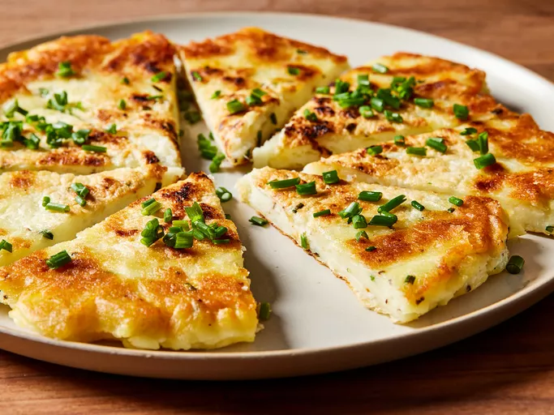

Potato Pancake Recipe

Description
Potato pancakes are shallow-fried pancakes of grated or ground potato, matzo meal or flour and a binding ingredient such as egg or applesauce, often flavored with grated garlic or onion and seasonings. They may be topped with a variety of condiments, ranging from the savory (such as sour cream or cottage cheese), to the sweet (such as apple sauce or sugar), or they may be served plain. The dish is sometimes made from mashed potatoes to make pancake-shaped croquettes.Some variations are made with sweet potatoes.
Ingredients
- Cold Mashed Potatoes
- Corn Starch
- Large Egg
- Kosher Salt
- Ground Black Pepper
- Garlic Powder
- Fresh Chives
- Olive Oil
- Cooking Spray
Steps
- Gather Ingredients
- Mix the potatoes, potato starch, egg, seasonings, and a teaspoon of chives in one bowl.
- Heat oil in a skillet, then spoon the potato mixture into the skillet. Press it into an even layer to create a potato pancake.
- Reduce heat, cover the skillet, and cook until golden brown around the edges.
- Slide the pancake onto a large plate, then invert it onto another greased plate.
- Heat the remaining oil, then slide the pancake back into the skillet and cook, uncovered, until golden brown on the other side.